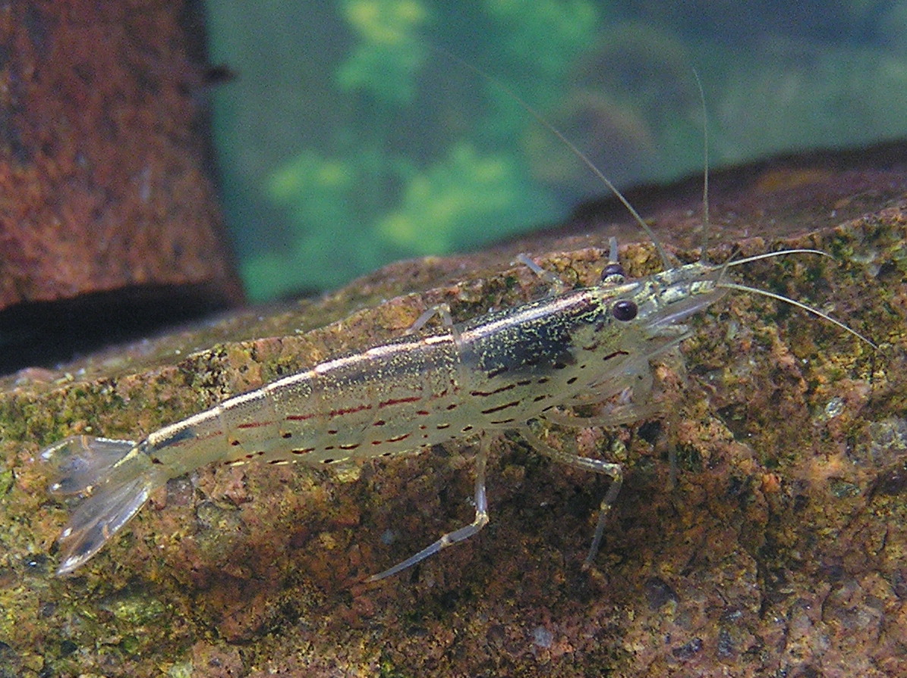
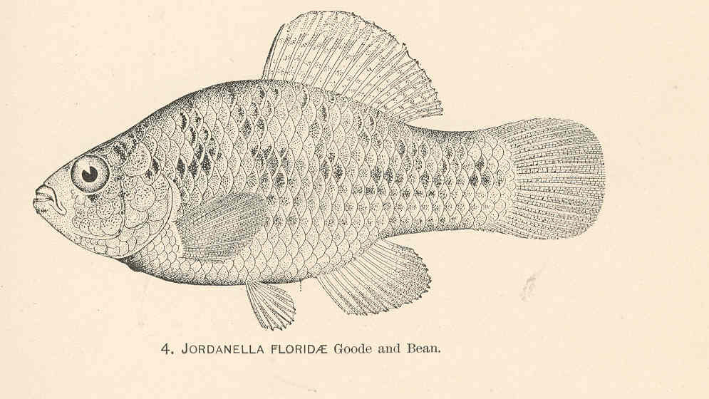
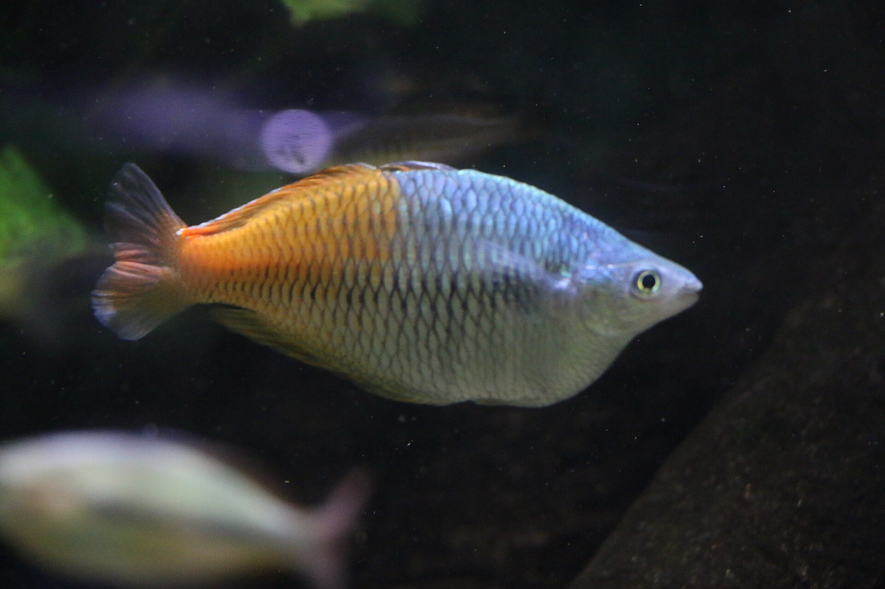

amano-shrimp

Representative layouts
Table thumbnail
Aquarium Builder row
- Status
- needs-editing
- Source
- Wikimedia Commons
- Creator
- MdE
- License
- CC BY-SA 3.0 de
Nothing shown here is approved or published. Review anatomy, identity, crop, edges, provenance, attribution, license, and commercial/modification rights.


